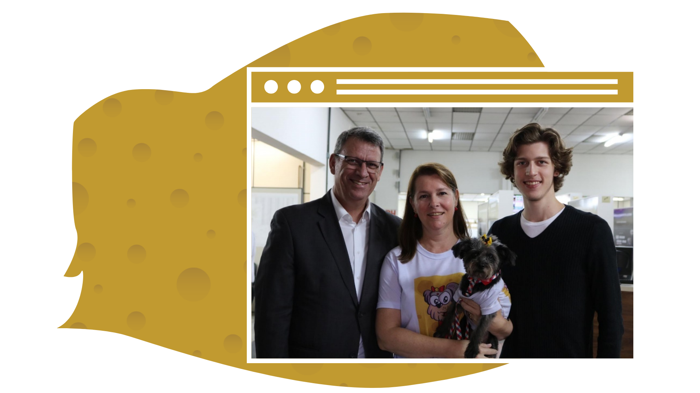

Sejam bem-vindos
O projeto Tampinhas da Theodora recolhe tampas plásticas de todos os tamanhos e cores e todo o valor arrecadado é destinado à castração de animais carentes do município.
O projeto Tampinhas da Theodora recolhe tampas plásticas de todos os tamanhos e cores e todo o valor arrecadado é destinado à castração de animais carentes do município.
Theodora é uma cachorrinha muito esperta e mascote do projeto, mas quem a vê não imagina o que já enfrentou. Theodora sofreu maus tratos, ficou doente e fraca, mas foi adotada pela família Stenzoski e agora, recebe todo o carinho que procurava.
O projeto Tampinhas da Theodora foi criado no dia primeiro de setembro de 2018 pela família Stenzoski. O projeto tem o objetivo de trabalhar com a causa ambiental e animal. As tampinhas são vendidas para a empresa Moveltec, depois são transformadas em componentes móveis, como pézinhos, rodinhas e peças internas para auxiliar na montagem de móveis que compramos nas lojas.
Todo o dinheiro arrecadado através da venda das tampinhas é destinado à castração de animais. Vale destacar que os animais resgatados são castrados, recebem vacina, vermífugo e ficam sob cuidado de protetoras independentes (lares temporários) até serem adotados.
Durante todo o processo toda a população é beneficiada, pois o projeto contribuí com o controle populacional de cães e gatos, evitando o sofrimento animal e contribuindo com a saúde pública do município, uma vez que animais vagando em vias públicas podem levar doenças (zoonoses) aos humanos, prejudicando a nossa saúde
Como você pode nos ajudar?
Nós temos vários pontos de coleta de tampinhas pela cidade, confira o mais próximo de você e faça a diferença na vida de um animal: